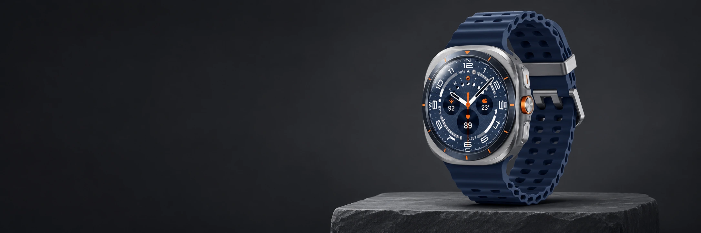

Характер
в деталях.
Титановый корпус и ремешок из фторэластомера.
Титан · IP68Синий титан
Артикул: SM-L705FZB1CAU

1 / 4
Цвет: синий титан
Синий титан

Титановый корпус, Super AMOLED и всё важное на запястье.
Титановый корпус и ремешок из фторэластомера.
Титан · IP68Яркий Super AMOLED для уведомлений, времени и ваших показателей.
1,47″ · 480 × 480Характеристики версии SM-L705FZB1CAU. Данные магазина ↗


Поделитесь впечатлениями о Galaxy Watch Ultra.
В карточке SM-L705FZB1CAU указана гарантия 12 месяцев. Условия обслуживания и документы уточните перед покупкой. Гарантия и сервис ↗
Сравните выбранный цвет, память и артикул. Фотографии относятся к указанной конфигурации. Доступность каждой версии подтвердит консультант магазина.
Проверенный состав комплекта указан в разделе «Комплектация». Актуальную упаковку и наличие дополнительных принадлежностей подтвердит магазин.
Способы оплаты и условия рассрочки зависят от выбранного товара и оформления заказа. Способы оплаты ↗
Доставку и самовывоз можно согласовать при оформлении в магазине. Срок и стоимость зависят от адреса и выбранной техники. Доставка и самовывоз ↗
Galaxy Watch UltraСиний титан* Концепция редизайна. Цена из карточки магазина на 09.11.2026; актуальные цену, наличие и условия покупки уточняйте в магазине.